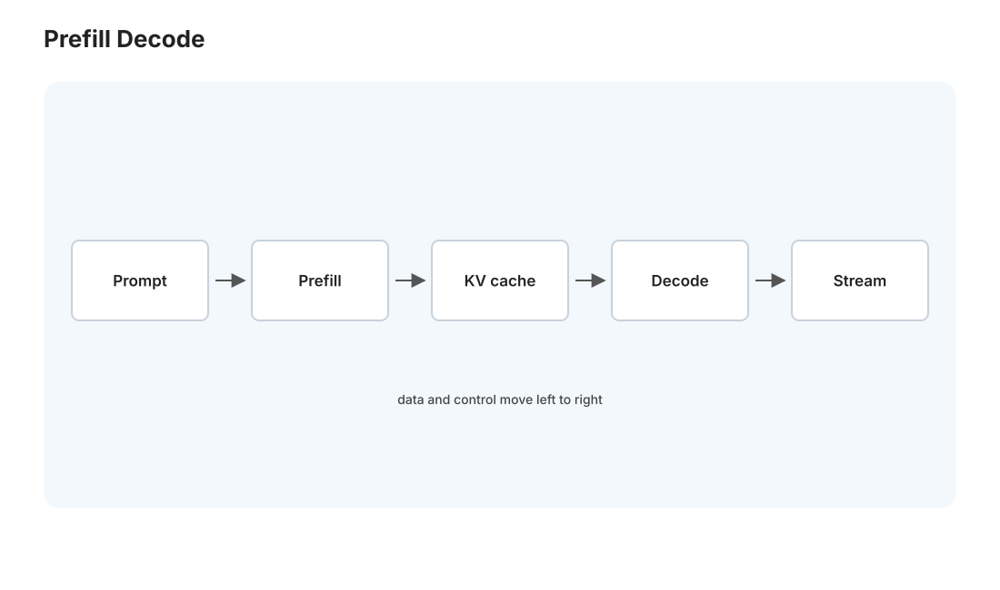
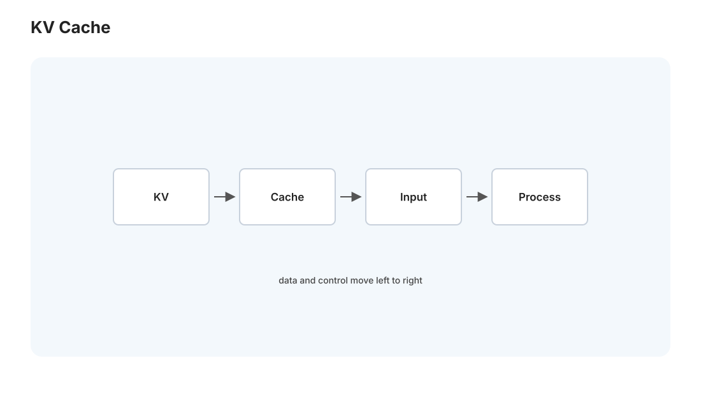
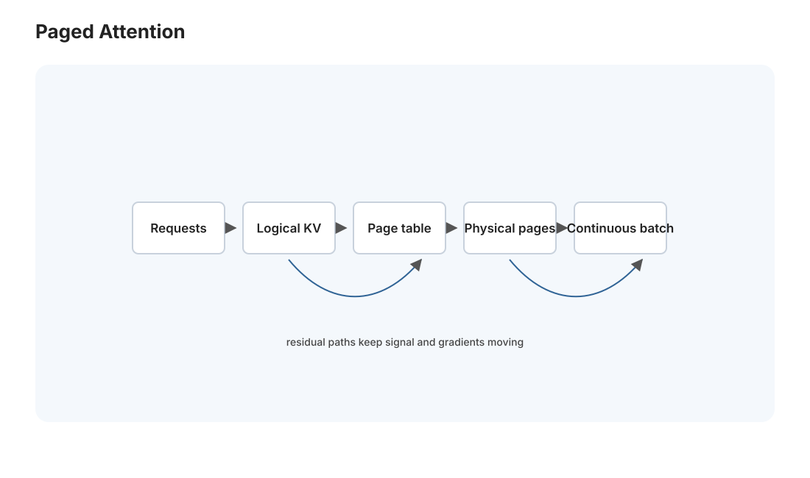

本页目录
MLSys II · 推理系统与算子优化
对标：vLLM / TensorRT-LLM 文档 / MLSys 推理论文 ｜ 前置：mlsys-01、gpu-02（attention kernel）、comfy-course（你用的生成栈） 模型训好只是一半——推理系统负责让它高效服务：低延迟、高吞吐、省显存、稳定。这是你每天用 Claude/DeepSeek/本地 ComfyUI 时背后运转的引擎（Medusa 的 DeepSeek 调用、comfy 课的扩散推理都在此）。这一页讲 LLM 推理的独特挑战（自回归 + KV cache）、让它快起来的系统技术（连续批处理、PagedAttention）、以及压缩模型的量化与蒸馏。
学习层：同一块 GPU，为什么吞吐上升却让短请求更慢？
具体谜题：长请求挡在门口
固定 toy 服务每 tick 能处理 24 个 prefill token，并同时推进 3 个 decode slot。R01 在 \(t=0\) 到达，prompt=18、output=12；R02 在 0.1 到达，prompt=6、output=2。若策略是来一个做完一个，R02 何时看到首 token？若静态 batch 等 R01，continuous batching 如何改变短请求的等待？
先预测四个指标
预测：① TTFT 包含排队和 prefill，不能用 TPOT 代替；② static batch 的 head-of-line 约束会让短请求等长请求，continuous batching 能在迭代边界重新填 decode slot；③ 增大到达率首先推高 queue delay 和 p95/p99；④ KV-cache 预算按 active token 增长，batch size 不是并发上限的同义词。
最小心智模型：prefill、decode、KV 三本账
Prefill 一次处理输入，决定首 token；decode 自回归逐 token 处理，每个 active sequence 都消耗服务机会和 KV-cache。scheduler 只改变工作何时进入这两阶段，不会删除 prompt/output token。比较策略时固定请求 trace、容量、观察窗和 SLO。
形式机制与不变量
对请求 \(i\)，令到达、prefill 开始、首 token、完成分别为 \(a_i,s_i,f_i,c_i\)：\(\mathrm{TTFT}_i=f_i-a_i\)，\(\mathrm{TPOT}_i=(c_i-f_i)/(n_i-1)\)，\(\mathrm{E2E}_i=c_i-a_i\)。若每 token KV 占 \(k\) bytes，则峰值 KV 为 \(k\cdot\max_t(\text{active prompt+output tokens at }t)\)。稳定系统的长期平均还满足 Little 定律 \(L=\lambda W\)，但有限 trace 或过载队列不能机械套用。
\n+反例与失效边界
- 真实 batch 可能摊薄 kernel 开销，也可能因长度混合、prefill/decode 争用而伤害 TTFT；本 toy 不附送厂商吞吐红利。
- 完成样本的 p99 不能代表窗口内未完成请求；观察窗、删失标记和 SLO 分母必须写清楚。
- PagedAttention 解决 KV 的碎片与分配问题，不会自动解决调度公平、取消、网络或模型质量。
迁移任务：从 toy ledger 到服务 SLO
为一个短请求占 80%、长请求占 20% 的摘要服务设计 admission、batch/wait、最大 active sequence 和 KV reserve。先用 \(L=\lambda W\) 做数量级检查，再列出至少三项必须由真实压测测量的变量，并与 L09 的 attention kernel 和 L01 的缓存/分块联系起来。
无 JavaScript 时的静态读法：默认 prefill 容量 24 token/tick、decode 3 slot。R01 的 18-token prompt 可在一个 prefill tick 完成，R02 的 6-token prompt 还要遵守策略的排队规则；static batch 会等整批的最长 decode，continuous batching 在每个 tick 重新选择 ready sequence。若 \(k=0.25\) MB/token，R01 完成前至少占用 \((18+12)\times0.25=7.5\) MB 的 toy KV reserve。交互版先让你预测，再比较 immediate/static/continuous 的 TTFT、TPOT、E2E、p95、goodput、backlog 和 KV 峰值。
| 请求 | 到达 | prompt | output | 角色 |
|---|---|---|---|---|
| R01 | 0.00 | 18 | 12 | 长 |
| R02 | 0.10 | 6 | 2 | 短 |
| R03 | 0.22 | 5 | 3 | 短 |
| R04 | 0.38 | 7 | 2 | 短 |
1. LLM 推理为什么特殊：自回归与两个阶段

LLM 生成是自回归的——一个 token 一个 token 地出，每个新 token 依赖前面所有 token。这带来独特的两阶段结构：
- Prefill（预填充）：处理输入 prompt，一次并行算完所有输入 token——算力受限（大矩阵乘，GPU 吃饱）。
- Decode（解码）：逐个生成输出 token，每步只算一个——内存受限（每步要读整个模型权重却只算一个 token，算术强度极低，Roofline 落在带宽屋顶，perf-01）。
关键洞察：decode 阶段 GPU 算力大量闲置（在等着把权重从显存搬进来），这决定了推理优化的方向——要么提高每次搬权重服务的请求数（批处理），要么减少要搬的数据（量化）。
2. KV Cache：推理的核心数据结构


自回归每生成一个 token 都要对前面所有 token 做 attention（gpu-02）。若每步重算所有历史 token 的 Key/Value，是巨大浪费。KV Cache：把已算过的 token 的 K、V 缓存下来，新 token 只算自己的 + 复用缓存——把每步的 attention 从 \(O(N^2)\) 降到 \(O(N)\)。
代价——KV Cache 吃显存且随序列增长：长上下文时 KV Cache 能比模型本身还大，成为显存瓶颈和吞吐瓶颈。这引出推理系统最重要的两个创新：
- PagedAttention（vLLM 的核心）：传统 KV Cache 要连续显存、按最大长度预分配 → 大量浪费（碎片 + 预留）。PagedAttention 借鉴操作系统的虚拟内存分页（🔗 csapp-04！）——把 KV Cache 切成页、按需分配、用页表映射。显存碎片几乎消失、利用率大增 → 能同时服务多得多的请求。这是"OS 的分页思想搬到 GPU 显存管理"的漂亮跨界，本站 csapp-04 与本页在此呼应。
- 连续批处理（continuous batching）：传统静态批处理要等一批请求全部生成完才换下一批（快的请求被慢的拖住，GPU 空转）。连续批处理在 token 级别动态换入换出请求——一个请求生成完立刻让新请求补位，GPU 始终吃饱。吞吐提升数倍，是现代 LLM 服务的标配。
3. 算子优化：把计算榨干
- 算子融合（kernel fusion）：把多个小算子（如 LayerNorm 的一串逐元素操作）融合成一个 kernel——减少 GPU kernel 启动开销 + 减少中间结果的显存往返（🔗 gpu-02、perf 的减少内存访问）。
- FlashAttention（gpu-02 [L09] 的生产版）：不落 \(N\times N\) 中间矩阵的 attention——推理和训练都用，长上下文的关键。
- 投机解码（speculative decoding）：用一个小的"草稿模型"快速生成几个候选 token，大模型一次并行验证——把内存受限的 decode 变得更"算力密集"、加速生成而不改变输出分布。一个用小模型加速大模型的巧妙系统技巧。
4. 模型压缩:量化、蒸馏、剪枝
让模型更小更快（尤其本地部署，你的 4060 Ti / comfy 课直接相关）：
- 量化（quantization）：把权重从 fp16 降到 int8/int4——显存减半再减半、decode 阶段搬权重更快（decode 是内存受限，量化直接加速）。关键是保持精度（GPTQ/AWQ 等在量化时补偿误差）。"4-bit 量化让 70B 模型跑进消费级显卡"就是量化的胜利——你在本地跑量化模型（GGUF/AWQ）时用的正是它。
- 蒸馏（distillation）：用大模型（teacher）的输出训练小模型（student）——小模型学到大模型的行为，体积小几倍。DeepSeek/Qwen 的小模型多经蒸馏。
- 剪枝（pruning）：删掉不重要的权重/结构——理论优雅但硬件加速不易（非结构化稀疏 GPU 不友好）。
方法论：推理优化 = 减少要搬的数据（量化/压缩）× 提高硬件利用率（批处理/融合）× 减少冗余计算（KV cache/投机）——这三个杠杆覆盖了几乎所有 LLM 推理加速手段，是一张能装下 vLLM/TensorRT-LLM 全部技巧的地图。
5. 端到端：一次推理请求的旅程（Medusa 视角）
把全页串起来——你的 Medusa 发一个 DeepSeek 请求，服务端发生什么：
- 请求进入调度器，连续批处理把它拼进当前 batch。
- Prefill 阶段并行处理你的 prompt，建立 KV Cache（PagedAttention 分页管理）。
- Decode 阶段逐 token 生成，每步复用 KV Cache、可能用投机解码加速。
- 模型可能是量化版以省显存提吞吐。
- 流式返回 token（🔗 net-02 的 SSE/流式）。
理解这条链，你就懂了"为什么长 prompt 首 token 慢（prefill）、生成速度稳定（decode 内存受限）、并发高时仍不卡（连续批处理）"——从此 LLM API 的性能表现对你不再是黑盒。
6. 练习与要点
例 1（KV Cache 算账） 一个模型 32 层、隐藏维 4096、fp16，估算 2048 token 上下文的 KV Cache 显存（约 2 × 32 × 4096 × 2048 × 2 字节 ≈ 1 GB/请求）——理解"为什么长上下文 + 高并发那么吃显存"，PagedAttention 为什么重要。
例 2（prefill vs decode） 解释"为什么 API 的首 token 延迟（TTFT）和后续每 token 延迟（TPOT）是两个不同指标、优化手段不同"——把两阶段结构用到真实性能理解。
例 3（该量化吗） 你要在 4060 Ti 16GB 上跑一个 14B 模型——fp16 装不下（28GB），int4 量化后约 7GB 可跑。判断量化的收益与精度代价。把压缩技术用到你自己的本地部署决策。\(\blacksquare\)
📋 大 Project P07 · 迷你推理引擎
教师版作业说明书，不提供完整解。 P07 是 MLSys 收官项目：不要求训练大模型，而是实现一个小而完整的自回归推理服务，理解 vLLM/TensorRT-LLM 这类系统的核心取舍。
- 学习目标：把 prefill/decode、KV Cache、连续批处理、PagedAttention、量化这些概念落到一个可测系统里。
- 教师提供：Tiny Transformer 权重或随机可复现模型、Tokenizer 简化版、单请求参考推理、请求流生成器、TTFT/TPOT/throughput benchmark、显存/内存统计脚本。
- 学生任务：① 实现单请求 greedy decode，输出与参考实现一致；② 加 KV Cache，避免重复计算历史 K/V；③ 实现连续批处理调度器，在 token 级别接入/移除请求；④ 实现分页 KV Cache 管理，支持变长上下文和回收；⑤ 实现 int8 或 int4 权重量化路径，并报告精度/速度/内存取舍。
- 接口约束：服务接口至少支持
submit(prompt, max_tokens)、流式 token 回调、取消请求；调度器不得让短请求长期饿死；Paged KV 的页分配、引用和释放必须可观测。- 验收测试：单请求输出与参考一致；开启 KV Cache 后 decode 计算量明显下降；并发请求下吞吐提升且 TTFT/TPOT 有记录；长短混合请求无泄漏、无串 token；量化后内存下降并给出误差指标。
- 评分重点：单请求正确性 20%，KV Cache 20%，连续批处理 25%，Paged KV 20%，量化与系统报告 15%。
- 延伸挑战：加入 speculative decoding 或 prefix cache，并用请求级时间线说明它在哪些负载上有收益。
并行与性能线彻底完成。下一页进入语言线——PL I：λ 演算与类型系统，程序语言的数学根，也是你未来 Lean4 计划的地基。